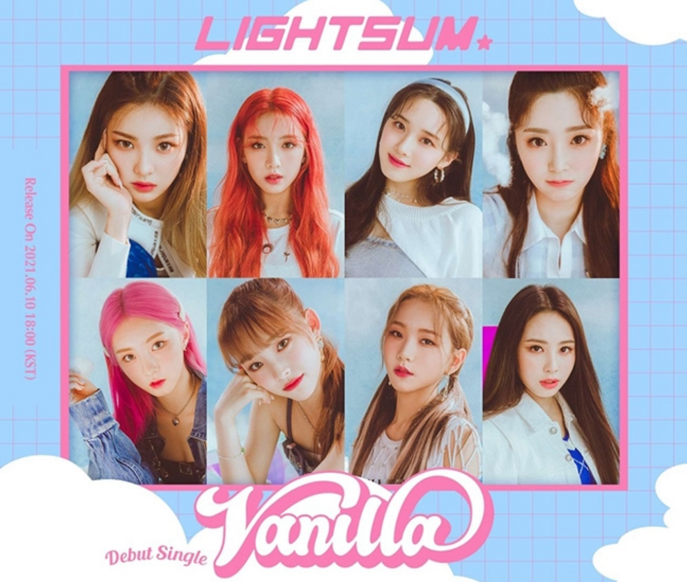
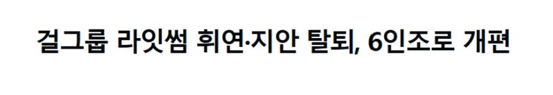
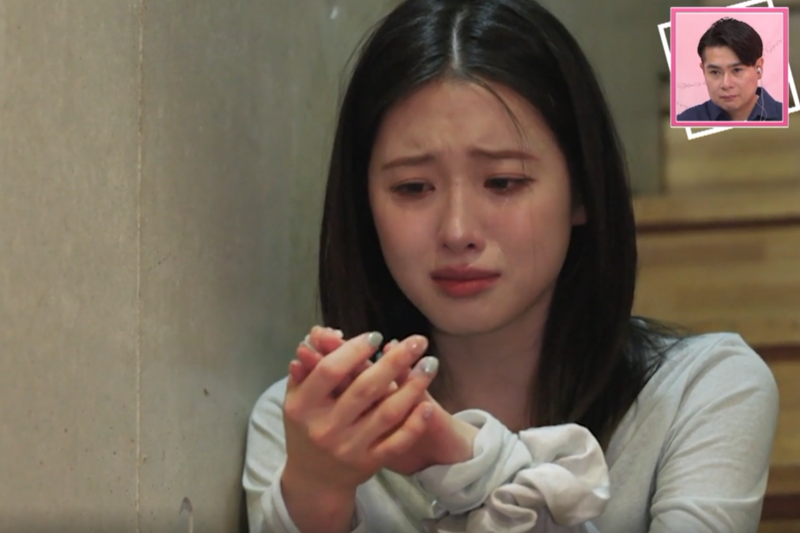
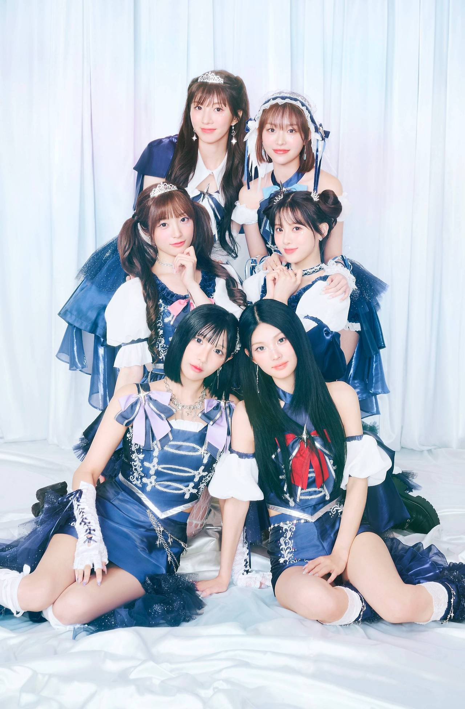
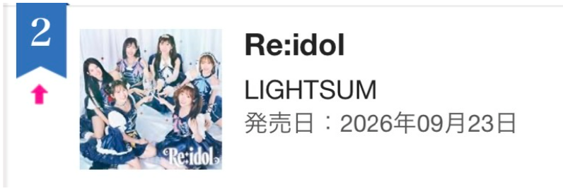
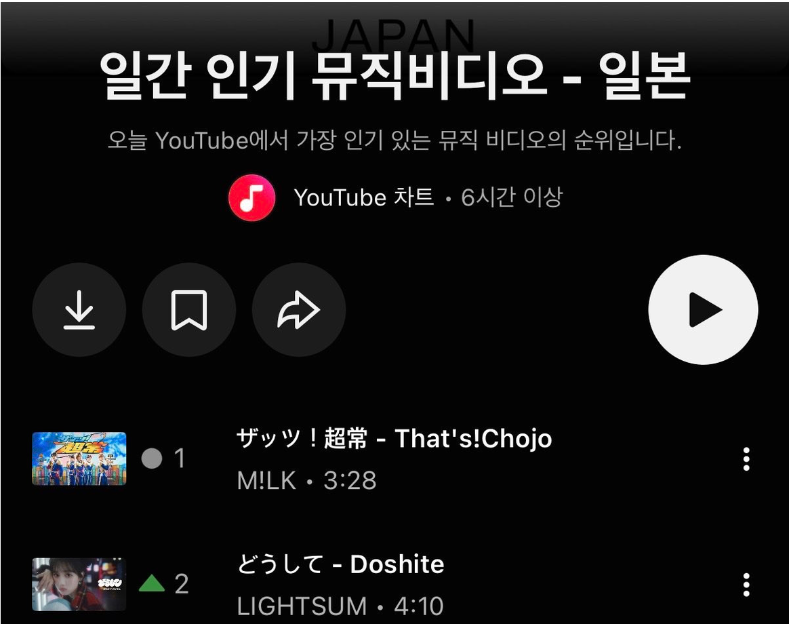
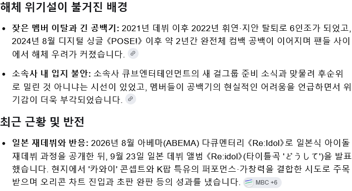

https://theqoo.net/square/4413101921

프듀 한초원 있는 그룹
큐브 라잇썸 얘기임
2021년 6월 데뷔
코로나 한복판이라 팬들 얼굴도 제대로 못 보고 시작했음

2022년 10월엔 멤버 2명이 탈퇴했고
2024년 8월 'POSE!' 이후로
2년 넘게 새 노래가 하나도 안 나왔음

그 사이 멤버들은
가족한테 용돈 받으면서 버텼다고 함

그러다 올해 9월
일본에서 다시 데뷔함
일본 ABEMA 다큐 'Re:idol'에서
일본식 카와이 아이돌로 다시 데뷔하는 과정이 그대로 나갔음
그 와중에 일본에선 일본 아이돌 따라 한다는 비난까지 들기도 했지만
진심이 통했는지

무려 >>>오리콘 2위<<<까지 올라가고

일본 각종 차트에서도 반응이 확실히 오는 중

바이럴이냐고